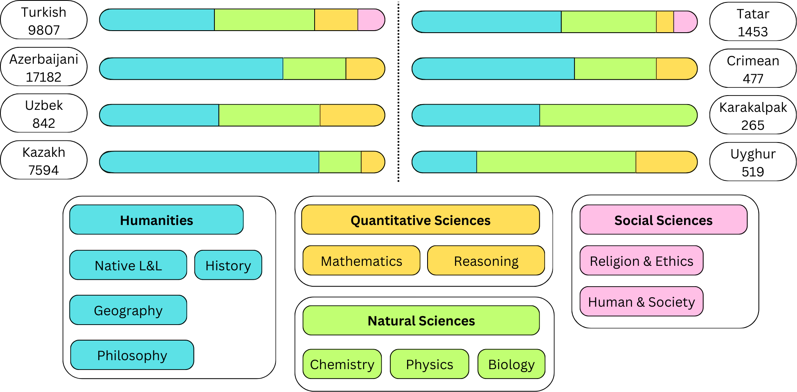

|
Jafar Isbarov I'm a 1st year Ph.D. student in the Department of Computer Science at Virginia Tech. I am working on LLM security under the guidance of Dr. Murat Kantarcioglu. Before that, I was a visting student at New York University where I was working with Duygu Ataman on evaluation of multilingual LLMs. I also have 3+ years of industry experience building NLP systems in low-resource environments. |
|
|
Research My current research interests include:
In the past, I have worked in various problems, such as (1) single-cell data analysis, (2) spelling correction for agglutinative languages, and (3) foundation models for Azerbaijan. |
|
News |
|
Aug. '25 |
Started Ph.D. program in Computer Science at Virginia Tech. |
|
May '25 |
Our paper TUMLU has been accepted to ACL 2025 (Main Conference)! |
|
Dec. '23 |
Graduated from George Washington University with a Master's degree in Computer Science (summa cum laude) . |
|
Publications |
|  |
Jafar Isbarov, Arofat Akhundjanova, Mammad Hajili, Kavsar Huseynova, Dmitry Gaynullin, Anar Rzayev, Osman Tursun, Ilshat Saetov, Rinat Kharisov, Saule Belginova, Ariana Kenbayeva, Amina Alisheva, Aizirek Turdubaeva, Abdullatif Köksal, Samir Rustamov, Duygu Ataman We introduce TUMLU, a unified and native language Understanding benchmark for Azerbaijani, Crimean Tatar, Karakalpak, Kazakh, Tatar, Turkish, Uyghur, and Uzbek. This paper was accepted to the main conference at ACL 2025 |
See my Google Scholar page for the full list.
|
Education |

|
Virginia Tech
08.2025 - Present PhD in Computer Science GPA: - Advisor: Dr. Murat Kantarcioglu |

|
George Washington University
08.2023 - 12.2025 MSc in Computer Science GPA: 3.91 / 4.00 Advisors: Dr. Duygu Ataman (New York University) & Dr. Samir Rustamov |
|
Academic Service
|
|
The source for this website is from here. |
|
|